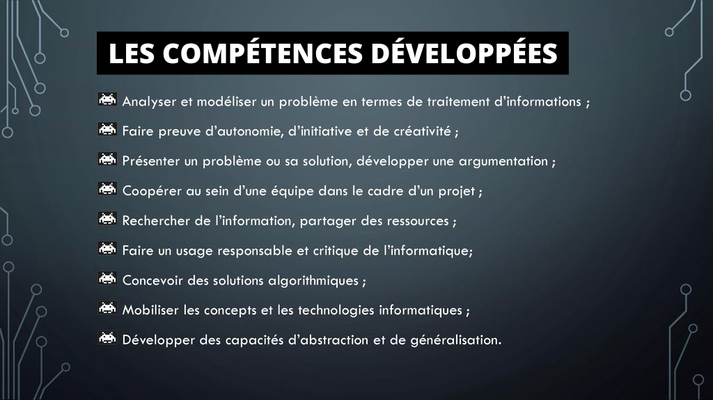
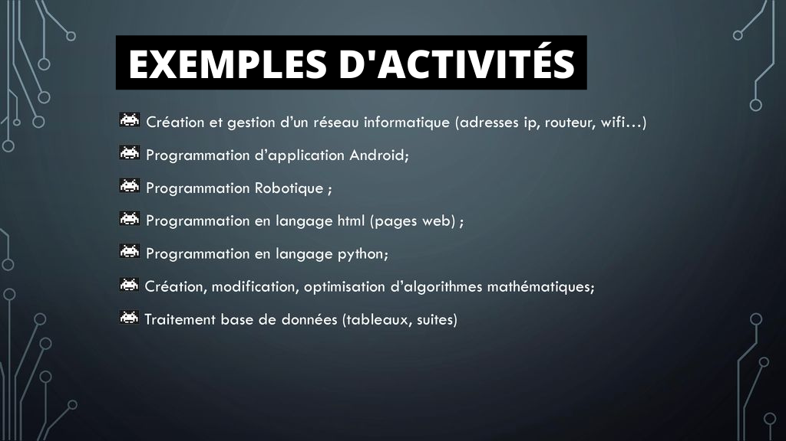
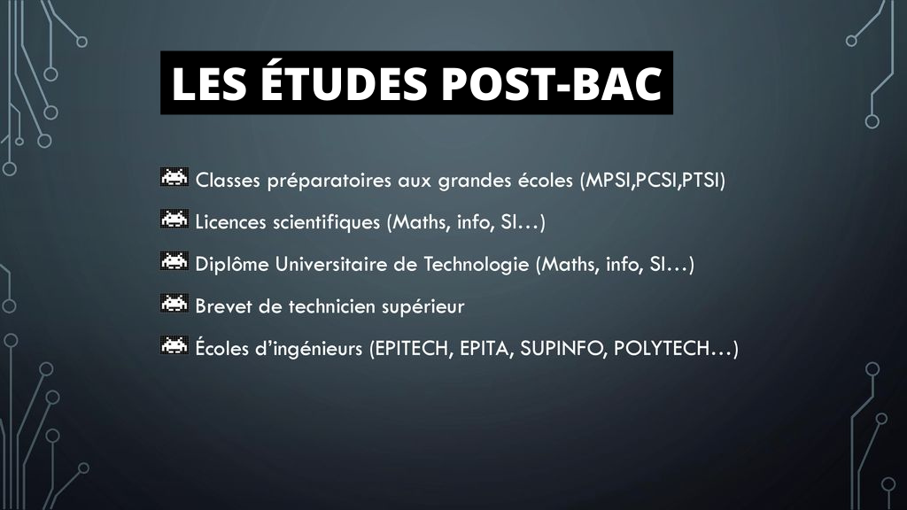

NSI 1ère
Programme
Accompagnement
Poursuites d'études
Débouchés professinnels
En quoi consiste l'enseignement de spécialité NSI ?
La spécialité NSI en première permet de préparer les élèves à approfondir leurs connaissances en informatique. Elle est destinée à tous les élèves qui sont curieux et qui sont intéressés par l’informatique et les mathématiques. La spécialité Numérique et sciences informatiques vous permet de comprendre les bases de la programmation, pour élaborer des logiciels par exemple, des sites internet, des applications pour smartphones, etc...
Voici quelques informations

Les Compétences Développées
1

Les Exemples D'Activités
2

Les Études Post-Bac
3